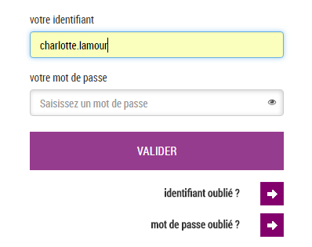

♦Nos activités laissent des traces de deux types :
- Traces externes : mots clés saisis sur un moteur de recherche, géolocalisation, centres d'intérêts
- Traces internes : Mémoire cache, historique, cookies, ID et mots de passe retenus
C'est un petit fichier texte stocké sur le disque dur.

Son but premier : améliorer le confort de l'internaute.
Ils sont gérés par les navigateurs.
Ils servent à améliorer la qualité de la navigation.
Il existe 2 types de cookies à usage déviant: Les Cookies à "Guid" et à "Spyware"
Les Cookies sont utilisés par les publicitaires de manière à créer des publicités visant l'internaute concerné.
Ils sont aussi revendus à des fins statistiques dans le but d'améliorer certaines fonctionnalités d'un site ou d'un programme
(Exemple: Apple, Microsoft, Google, etc) mais aussi pour engendrer d'autres publicités.